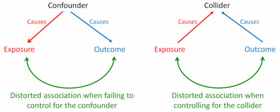
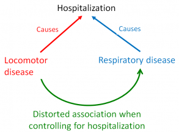
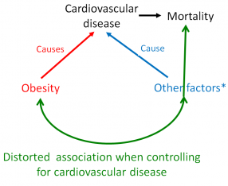

Collider bias
Bias
A distortion that modifies an association between an exposure and outcome, caused by attempts to control for a common effect of the exposure and outcome.
Background
When an exposure and an outcome independently cause a third variable, that variable is termed a ‘collider’. Inappropriately controlling for a collider variable, by study design or statistical analysis, results in collider bias. Controlling for a collider can induce a distorted association between the exposure and outcome, when in fact none exists. This bias predominantly occurs in observational studies. Because collider bias can be induced by sampling, selection bias can sometimes be considered to be a form of collider bias. The diagram below contrasts bias through confounding and collider bias.

Example
A clear example of collider bias was provided by Sackett in his 1979 paper. He analysed data from 257 hospitalized individuals and detected an association between locomotor disease and respiratory disease (odds ratio 4.06). The association seemed plausible at the time – locomotor disease could lead to inactivity, which could cause respiratory disease. But Sackett repeated the analysis in a sample of 2783 individuals from the general population and found no association (odds ratio 1.06). The original analysis of hospitalized individuals was biased because both diseases caused individuals to be hospitalized. By looking only within the stratum of hospitalized individuals, Sackett had observed a distorted association. In contrast, in the general population (including a mix of hospitalized and non-hospitalized individuals) locomotor disease and respiratory disease are not associated. In 1979, Sackett termed this phenomenon “admission rate bias”. With the help of causal diagrams (also known as directed acyclic graphs [DAGs]), this phenomenon can be explained by collider bias (Figure 1).
In this example, locomotor disease and respiratory disease are independent causes of hospitalization – the collider (since the two arrowheads collide into hospitalization). If the collider is controlled for by study design (selection bias), a distorted association will arise between locomotor and respiratory disease. This is what we see in Sackett’s 1979 example. Hypothetically, if he had statistically controlled for hospitalization in the general population dataset, he would have induced collider bias again, not through selection, but statistical error.

Figure 1. A causal diagram demonstrating collider bias. Controlling for hospitalization induces a distorted association between locomotor disease and respiratory disease.
A more recent example of the collider bias can be seen in the ‘obesity paradox’ (Figure 2). This paradox describes an apparent preventive effect of obesity on mortality in individuals with chronic conditions such as cardiovascular disease (CVD). In fact, obesity increases mortality rates in the general population. The collider bias occurs when an investigator conditions on CVD (by design or analysis), resulting in a distorted association between obesity and unmeasured other factors. This distorted association is what distorts the effect of obesity on mortality. Consequently, in a sample that includes only patients with CVD, obesity falsely appears to protect against mortality, whereas in the wider population (with and without CVD), obesity increases the risk of early death. There is some debate about whether collider bias completely explains the obesity paradox.

Figure 2. A causal diagram demonstrating how the obesity paradox can be explained by collider bias.
Impact
Collider bias can have major effects. In Sackett’s example, collider bias inflated a null effect (unbiased odds ratio 1.06) to a positive effect (biased odds ratio 4.06). In the obesity paradox example, collider bias switched an unbiased harmful effect of obesity on mortality into a biased protective effect. This was shown in an analysis of the third US National Health and Nutrition Examination Survey (NHANES III). In the unbiased analysis, the mortality risk ratio for the entire cohort was 1.24 [95% CI = 1.11, 1.39] (harmful). In the biased analysis, the stratum-specific mortality risk ratio was 0.79 [95% CI = 0.68, 0.91] (protective) in patients with CVD.
The impact of collider bias – published examples
| Example | Unbiased (collider uncontrolled) | Biased (controlled for collider) |
|---|---|---|
| Sackett 1979 | Odds ratio 1.06 Null effect | Odds ratio 4.06 Positive effect |
| Obesity paradox | Risk ratio 1.24 Harmful effect | Risk ratio 0.79 Protective effect |
Preventive steps
Collider bias can be prevented by carefully applying appropriate inclusion criteria – making sure that the exposure and outcome of interest do not drive inclusion or selective retention in a study.
Causal diagrams (DAGs) can help identify colliders and non-colliders (or confounders). By using these techniques in the design and analysis of observational studies, researchers can identify colliders that should be left uncontrolled and confounders that should be controlled.